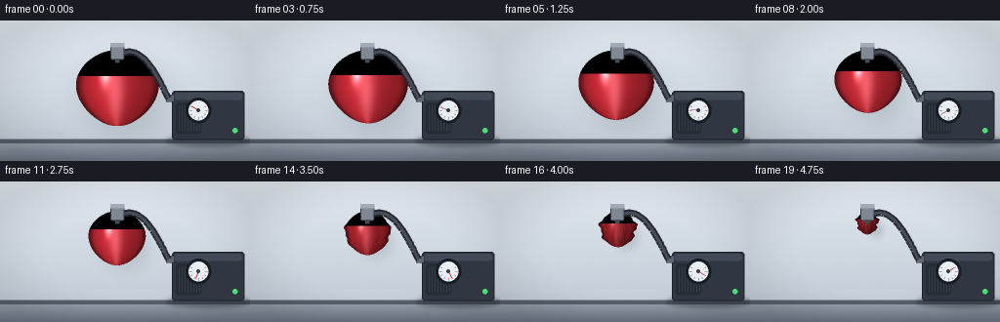
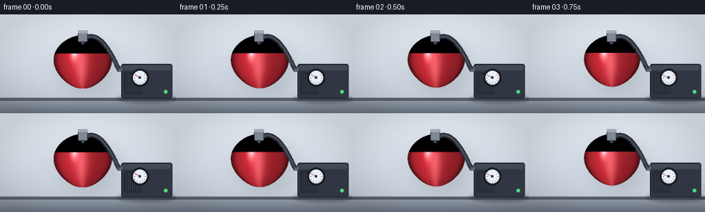

CODING AGENTS AS PIXEL WORLD MODELS
traex/Seed-2.1-Pro-0915 · phygen_020
点击播放 · 原生 RGB 像素
逐轮保存的候选
回放视频、检查图与代码变化。
每份候选均可单独播放。实际图片检查记录在下方工具轨迹中。
候选 01播放与检查图
点击播放 · 原生 RGB 像素


展开代码变化
--- 上一保存版本
+++ 本次保存版本
@@ -0,0 +1,231 @@
+"""Procedural timelapse: air being forcefully extracted from a sealed balloon.
+
+Renders 20 RGB frames (256x144 @ 4fps) with numpy/PIL only. A thin latex
+balloon hangs from a metal collar connected by a hose to a vacuum pump.
+As extraction proceeds the balloon shrinks, sways, then wrinkles into a
+crumpled pouch; the pump gauge sweeps into the vacuum (red) zone.
+"""
+import math
+
+import numpy as np
+from PIL import Image, ImageDraw, ImageFilter
+
+import artifact_io
+
+W, H, N = 256, 144, 20
+SS = 2 # supersampling factor
+W2, H2 = W * SS, H * SS
+
+NECK = (120.0, 30.0) # balloon collar / neck position (final pixels)
+HORIZON = 124.0
+
+
+def smoothstep(a, b, x):
+ x = np.clip((x - a) / (b - a), 0.0, 1.0)
+ return x * x * (3 - 2 * x)
+
+
+def make_background():
+ """Wall + floor at supersampled resolution as float RGB."""
+ yi, xi = np.mgrid[0:H2, 0:W2].astype(np.float32) / SS
+ wall_t = yi / HORIZON
+ top = np.array([224, 231, 238], np.float32)
+ bot = np.array([196, 205, 216], np.float32)
+ wall = top[None, None, :] * (1 - wall_t[..., None]) + bot[None, None, :] * wall_t[..., None]
+
+ floor_t = np.clip((yi - HORIZON) / (H - HORIZON), 0, 1)
+ ftop = np.array([150, 160, 172], np.float32)
+ fbot = np.array([104, 114, 128], np.float32)
+ floor = ftop[None, None, :] * (1 - floor_t[..., None]) + fbot[None, None, :] * floor_t[..., None]
+
+ bg = np.where((yi < HORIZON)[..., None], wall, floor)
+ seam = (yi >= HORIZON - 2.5) & (yi <= HORIZON + 1.5)
+ bg[seam] = np.array([86, 95, 107], np.float32)
+ dx = (xi - W / 2) / (W / 2)
+ dy = (yi - H / 2) / (H / 2)
+ vig = 1.0 - 0.10 * np.clip(dx * dx + dy * dy - 0.4, 0, 1)
+ bg *= vig[..., None]
+ rng = np.random.default_rng(7)
+ bg += rng.normal(0, 1.2, bg.shape).astype(np.float32)
+ return np.clip(bg, 0, 255)
+
+
+PUMP_RECT = (176, 72, 250, 122)
+GAUGE = (203.0, 92.0)
+
+
+def draw_pump_body(img):
+ """Static pump housing with floor shadow (drawn at 2x)."""
+ s = SS
+ d = ImageDraw.Draw(img)
+ x0, y0, x1, y1 = PUMP_RECT
+
+ sh = Image.new("RGBA", img.size, (0, 0, 0, 0))
+ ds = ImageDraw.Draw(sh)
+ ds.ellipse([(x0 - 6) * s, (y1 - 5) * s, (x1 + 6) * s, (y1 + 7) * s], fill=(20, 26, 34, 90))
+ sh = sh.filter(ImageFilter.GaussianBlur(2 * s))
+ img.alpha_composite(sh)
+
+ def box(r, **kw):
+ d.rounded_rectangle([r[0] * s, r[1] * s, r[2] * s, r[3] * s], radius=3 * s, **kw)
+
+ box(PUMP_RECT, fill=(48, 55, 66), outline=(28, 33, 42), width=s)
+ box((x0 + 2, y0 + 2, x1 - 2, y0 + 9), fill=(66, 74, 87))
+ box((x0 + 4, y0 + 12, x0 + 30, y1 - 6), fill=(38, 44, 54))
+ for gx in range(x0 + 7, x0 + 29, 3):
+ d.line([gx * s, (y0 + 15) * s, gx * s, (y1 - 9) * s], fill=(70, 78, 90), width=max(1, s // 2))
+ d.ellipse([(x1 - 12) * s, (y1 - 12) * s, (x1 - 7) * s, (y1 - 7) * s], fill=(80, 220, 120))
+ d.rectangle([(x0 - 6) * s, (y0 + 4) * s, (x0 + 2) * s, (y0 + 11) * s],
+ fill=(96, 104, 116), outline=(40, 45, 54), width=max(1, s // 2))
+ gx, gy = GAUGE
+ d.ellipse([(gx - 13) * s, (gy - 13) * s, (gx + 13) * s, (gy + 13) * s], fill=(24, 28, 35))
+ d.ellipse([(gx - 10) * s, (gy - 10) * s, (gx + 10) * s, (gy + 10) * s], fill=(232, 238, 244))
+ return img
+
+
+def draw_gauge(img, t, force):
+ """Animated gauge: needle sweeps -120deg (zero) -> +120deg (vacuum)."""
+ d = ImageDraw.Draw(img)
+ s = SS
+ gx, gy = GAUGE
+ jitter = force * 1.5 * math.sin(t * 40)
+ theta = math.radians(-120 + 240 * t + jitter)
+ for k in range(9):
+ a = math.radians(-120 + 30 * k)
+ r1, r2 = 7.0, 9.0
+ p1 = (gx + r1 * math.sin(a), gy + r1 * math.cos(a))
+ p2 = (gx + r2 * math.sin(a), gy + r2 * math.cos(a))
+ col = (190, 50, 50) if k >= 6 else (70, 78, 88)
+ d.line([p1[0] * s, p1[1] * s, p2[0] * s, p2[1] * s], fill=col, width=max(1, s // 2))
+ nx = gx + 7.5 * math.sin(theta)
+ ny = gy + 7.5 * math.cos(theta)
+ d.line([gx * s, gy * s, nx * s, ny * s], fill=(196, 44, 44), width=s)
+ d.ellipse([(gx - 1.6) * s, (gy - 1.6) * s, (gx + 1.6) * s, (gy + 1.6) * s], fill=(60, 60, 66))
+ return img
+
+
+def bezier(p0, p1, p2, p3, steps=60):
+ pts = []
+ for i in range(steps + 1):
+ u = i / steps
+ a = (1 - u) ** 3
+ b = 3 * (1 - u) ** 2 * u
+ c = 3 * (1 - u) * u ** 2
+ e = u ** 3
+ pts.append((a * p0[0] + b * p1[0] + c * p2[0] + e * p3[0],
+ a * p0[1] + b * p1[1] + c * p2[1] + e * p3[1]))
+ return pts
+
+
+def draw_hose_and_collar(img):
+ d = ImageDraw.Draw(img)
+ s = SS
+ cx, cy = NECK
+ x0, y0, _, _ = PUMP_RECT
+ pts = bezier((cx + 7, cy + 3), (cx + 30, cy - 6), (x0 - 8, y0 + 2), (x0 - 4, y0 + 7))
+ pts2 = [(x * s, y * s) for x, y in pts]
+ d.line(pts2, fill=(38, 41, 48), width=7 * s, joint="curve")
+ d.line(pts2, fill=(72, 77, 88), width=3 * s, joint="curve")
+ d.rounded_rectangle([(cx - 7) * s, (cy - 7) * s, (cx + 7) * s, (cy + 10) * s],
+ radius=2 * s, fill=(128, 136, 148), outline=(52, 58, 68), width=s)
+ d.rectangle([(cx - 7) * s, (cy - 7) * s, (cx + 7) * s, (cy - 3) * s], fill=(162, 170, 182))
+ d.rectangle([(cx - 2) * s, (cy + 9) * s, (cx + 2) * s, (cy + 13) * s], fill=(70, 76, 86))
+ return img
+
+
+BASE_RED = np.array([198, 42, 54], np.float32)
+
+
+def render_balloon(frame_bg, i, t, wrinkle, force):
+ cx, neck_y = NECK
+ sway = (1 - t) * 1.5 * math.sin(i * 0.85) + force * 0.7 * math.sin(i * 3.3)
+ cx += sway
+ L = 78 * (1 - t) + 24 * t + force * 0.4 * math.sin(i * 4.1)
+ A = 46 * (1 - t) + 12 * t + force * 0.3 * math.cos(i * 5.0)
+
+ yi, xi = np.mgrid[0:H2, 0:W2].astype(np.float32) / SS
+ v = (yi - neck_y) / L
+ prof = np.sqrt(np.clip(np.sin(np.pi * np.clip(v, 0, 1)), 0, 1)) * (1.0 - 0.16 * v)
+ u = (xi - cx) / np.maximum(A * prof, 1e-3)
+
+ wmod = wrinkle * np.sqrt(np.clip(np.sin(np.pi * np.clip(v, 0, 1)), 0, 1))
+ n_right = wmod * (0.13 * np.sin(v * 17 + 1.1) + 0.06 * np.sin(v * 39 + 0.4))
+ n_left = wmod * (0.13 * np.sin(v * 15 + 2.6) + 0.06 * np.sin(v * 33 + 2.1))
+ edge = np.where(xi >= cx, 1 + n_right, 1 + n_left)
+
+ qbase = np.abs(u)
+ mask = (v > 0.0) & (v < 1.0) & (qbase <= edge) & (prof > 1e-3)
+ q = np.clip(qbase / np.maximum(edge, 1e-3), 0, 1)
+
+ shr = 1.0 - 0.55 * t
+ snx = (xi - (cx + 9)) / (A * 1.25 * shr + 6)
+ sny = (yi - (neck_y + L * 0.55 + 6)) / (L * 0.72 * shr + 6)
+ sd = snx * snx + sny * sny
+ shadow = np.clip(1 - sd, 0, 1) ** 2 * 0.12
+ out = frame_bg * (1 - shadow[..., None])
+
+ z = np.sqrt(np.clip(1 - q * q, 0, 1))
+ shade = (0.34 + 0.30 * z
+ + 0.26 * np.exp(-((u + 0.42) ** 2 * 3.2 + (v - 0.34) ** 2.2))
+ + 0.10 * (1 - v))
+ rim = smoothstep(0.78, 1.0, q)
+ shade *= 1 - 0.42 * rim
+ shade += 0.10 * (1 - wrinkle)
+ shade *= 1 - 0.16 * wrinkle
+
+ f1 = np.sin((u * 0.5 + 0.5) * (2 * np.pi * 5.5) + v * 4.0 + 1.3 * np.sin(v * 8.0))
+ crease = np.clip((f1 - 0.15) / 0.85, 0, 1) * (0.35 + 0.65 * q)
+ f2 = np.sin((u * 0.5 + 0.5) * (2 * np.pi * 2.3) + 0.7)
+ broad = np.clip(-f2, 0, 1) * 0.5
+ shade *= 1 - wrinkle * (0.24 * crease + 0.12 * broad)
+ shade *= 1 - wrinkle * 0.22 * smoothstep(0.45, 1.0, v) * (1 - 0.5 * q)
+
+ rgb = BASE_RED[None, None, :] * shade[..., None]
+ spec = (np.exp(-(((u + 0.30) ** 2) / 0.014 + ((v - 0.26) ** 2) / 0.030)) * 0.85
+ + np.exp(-(((u + 0.05) ** 2) / 0.05 + ((v - 0.55) ** 2) / 0.25)) * 0.22)
+ spec *= (1 - 0.88 * wrinkle)
+ rgb += spec[..., None] * 255
+
+ rgb = np.clip(rgb, 0, 255)
+ out = np.where(mask[..., None], rgb, out)
+
+ if wrinkle > 0.05:
+ for ph, loc in [(0.2, -0.35), (1.9, 0.05), (3.3, 0.42)]:
+ xs = cx + A * loc * (1 - 0.5 * wrinkle)
+ meander = 1.6 * wrinkle * np.sin(v * 6 + ph)
+ dline = np.abs(xi - (xs + meander * (0.4 + v)))
+ band = (np.exp(-(dline / 0.7) ** 2)
+ * smoothstep(0.15, 0.95, v) * (1 - smoothstep(0.75, 1.0, v))
+ * wrinkle * 0.30)
+ out *= (1 - band[..., None])
+ return np.clip(out, 0, 255).astype(np.uint8)
+
+
+def main():
+ bg = make_background()
+ pump_body = draw_pump_body(Image.fromarray(bg.astype(np.uint8)).convert("RGBA"))
+
+ frames = []
+ for i in range(N):
+ t = (i / (N - 1)) ** 1.6
+ wrinkle = float(smoothstep(0.35, 1.0, t))
+ force = math.exp(-((t - 0.62) / 0.30) ** 2)
+
+ img = pump_body.copy()
+ img = draw_gauge(img, t, force)
+ frame_bg = np.asarray(img.convert("RGB")).astype(np.float32)
+
+ frame = render_balloon(frame_bg, i, t, wrinkle, force)
+ img = Image.fromarray(frame).convert("RGBA")
+ img = draw_hose_and_collar(img)
+
+ small = img.convert("RGB").resize((W, H), Image.Resampling.BOX)
+ frames.append(np.asarray(small, dtype=np.uint8))
+
+ frames = np.stack(frames)
+ artifact_io.save(frames, ".")
+ print(f"saved {frames.shape}")
+
+
+if __name__ == "__main__":
+ main()
可观测工具轨迹
实际执行的命令与返回图片。
命令 1exit 0
/bin/bash -lc 'cat prompt.txt; echo "---"; cat GENERATION_RULES.md; echo "---"; cat task_spec.json; echo "---"; ls -la'
命令 2exit 0
/bin/bash -lc 'cat artifact_io.py'
命令 3exit 0
/bin/bash -lc 'cd "$(pwd)" && python generate.py && ls -la frames | head && ls -la pixels.npz inspection.png index.html'
保存候选 1 份；完成命令 3 次；可验证图片返回 0 张。原始 API 响应与完整日志保留在本地。